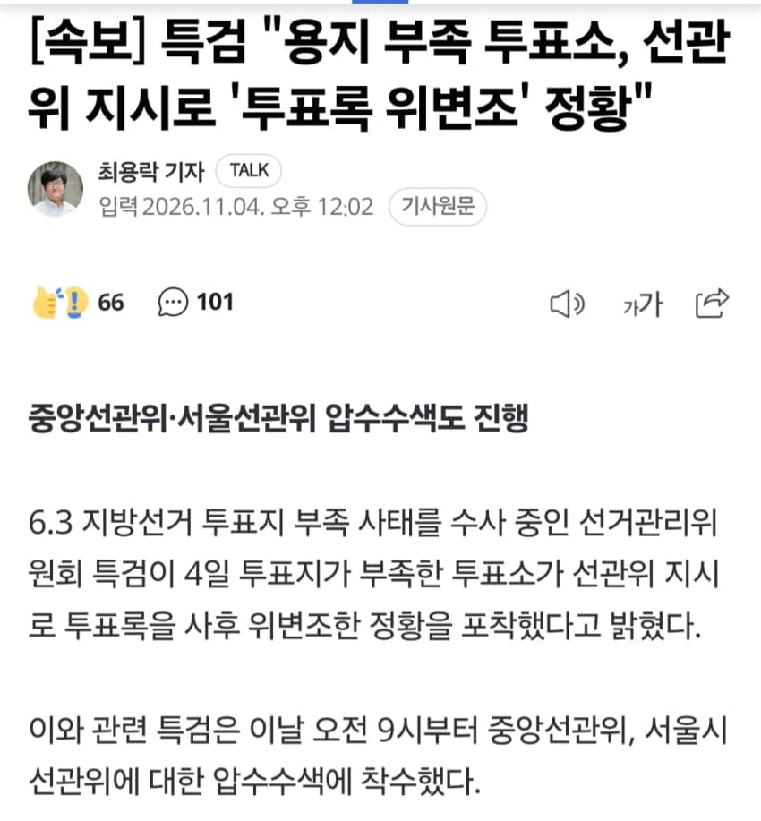
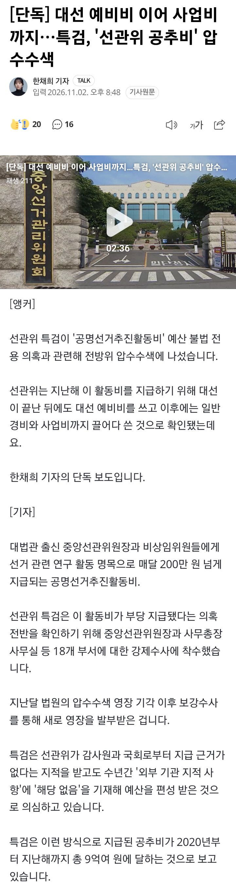
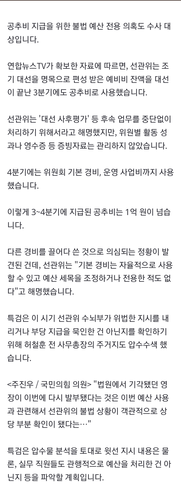
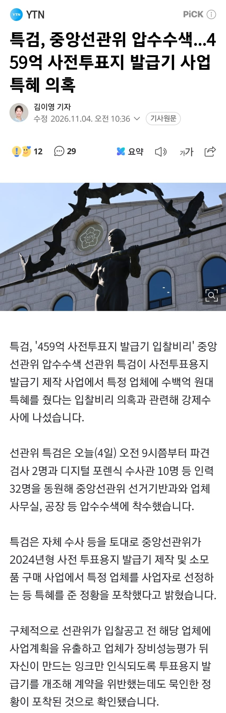

- dc official App
- 대선 예비비 이어 사업비까지…특검, '선관위 공추비' 압수수색



- 특검, 중앙선관위 압수수색...459억 사업 특혜 의혹

와....
나라 꼬라지
일부 외부·대용량·응답 실패 미디어는 원본 링크로 남아 있습니다.

- 대선 예비비 이어 사업비까지…특검, '선관위 공추비' 압수수색


- 특검, 중앙선관위 압수수색...459억 사업 특혜 의혹

와....
나라 꼬라지
댓글
댓글 보관 대기 중입니다. 원문 응답 오류가 있으면 다음 실행에서 다시 수집합니다.